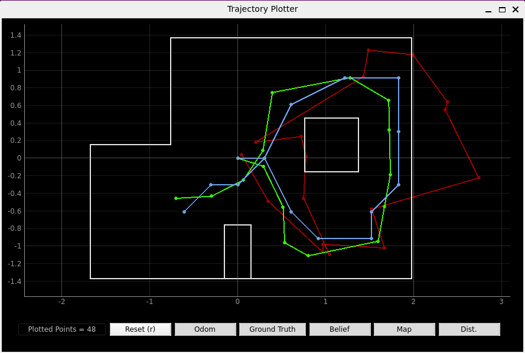
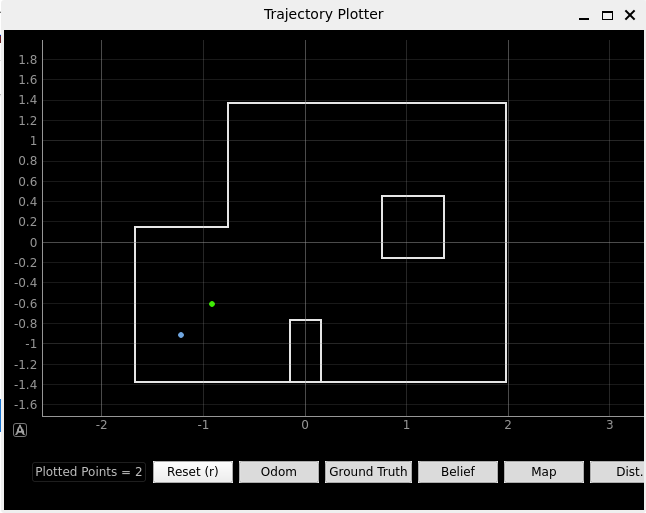
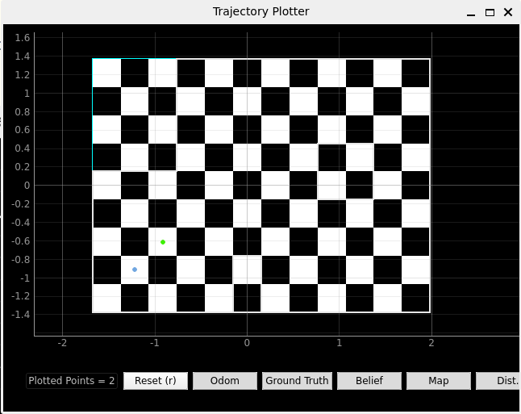
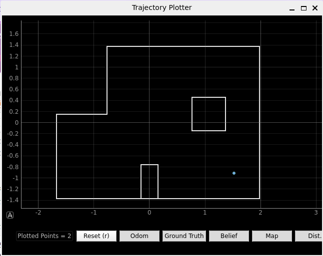
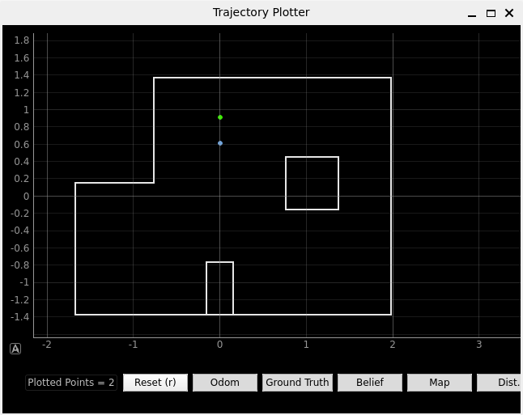
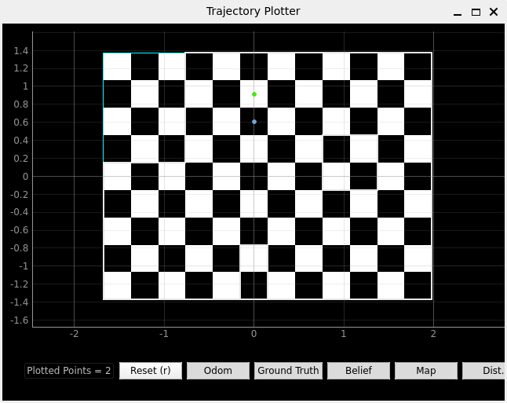
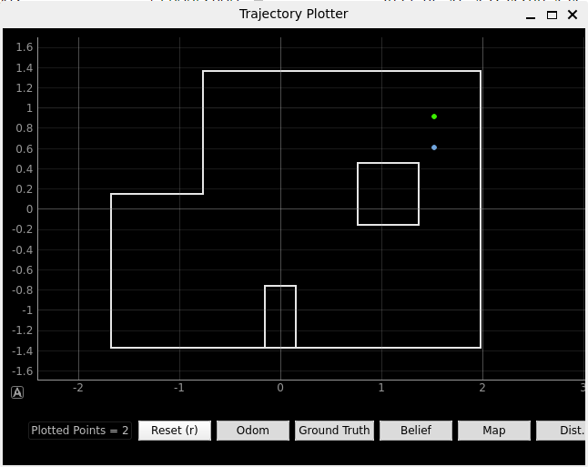
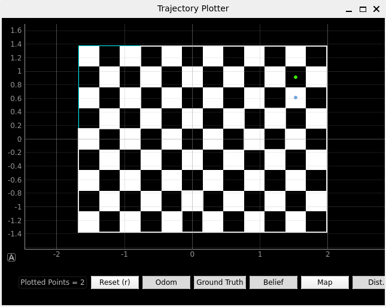
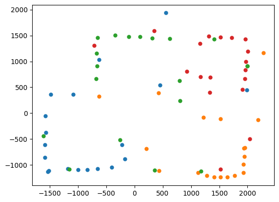

Lab 11 Localisation Real
The goal of this lab was to use an optimised Bayes filter to perform localisation on the real robot.
Simulator
I first tested the Bayes filter that was provided to us in the simulator. We can see that the ground truth and belief are quite similar (green and blue repectivley).
Observation Loop
On the Robot side, I needed to spin the robot counter clockwise and collect position data at 20° increments. My lab 9 code had a high enough resolution so I reused that but I collected orientation data as well and only stored data for multiples of 20°
I needed to use two different computers because the bluetooth connection only works on one and the simulator only works on the other one :'(. I used one computer to receive data (same as I did in lab 9) and I hardcoded that data into the other computer to use for the simulation. So the perform_observation_loop() function on the computer side just returns the hardcoded data and does not actually prompt the robot to spin or collect data.
Localise the Robot!
I placed the Robot on each of the 4 marked poses and ran the update step of the Bayes filter. The blue dot represents the belief and the green reprsents the ground truth. I also used the black and white grid to quantify the accuracy.
(-3,-2)
 (5,-3)
(0,3)
 (5,3)
 Discussion
For (0,3) and (5,3) the x position was perfect but the y position was exactly 0.3m lower. I was confused as to why I would see the same error in both. I plotted my data points (shown below) and saw that the top wall was read to be at about 1.5m while the real one is at 1.4m this means the robot thought it was further from the wall than it actually was. I think this could be because of the lighting on that side of the room or something to do with the surface of that wood because I got consistent wrong results. For (-3,-2) I seem to have the opposite problem where the robot thought it was closer to the wall than it was and this issue can also be seen in the plot. This points to the fact that the issue is with the ToF sensor and not the localisation code. I know this is not an issue with the way the Robot is being spun because the angles I received from the IMU were increments of 20 with very little error. The issue is also too consistent to be anything else (in fact, I saw very similar results in lab 9)
